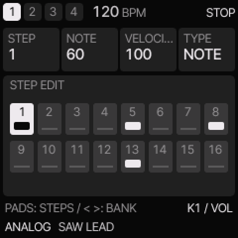
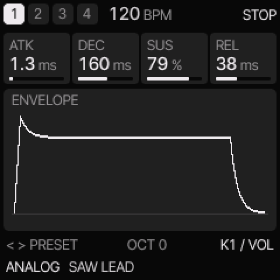

Felucca SMK★ Star
by Chance Roth (ChanceTheMaker), built on Felucca by Leo Kuroshita (Hügelton Instruments)
Felucca's synthesis and sequencing on the SMK's 37 keys, pads, eight knobs, four faders, pitch and mod wheels and display: engines from FM6 (six operators, 32 algorithms) and phase distortion to chiptune and samples, a step sequencer, a browser Studio, and a simulator that plays without the keyboard.
Installs from its own page. Its installer builds the package in your browser from the keyboard's
official firmware 016 and its calibration, so the keyboard needs 016 first. It is a beta: back up your sounds
and settings before, and read its notes on the page.